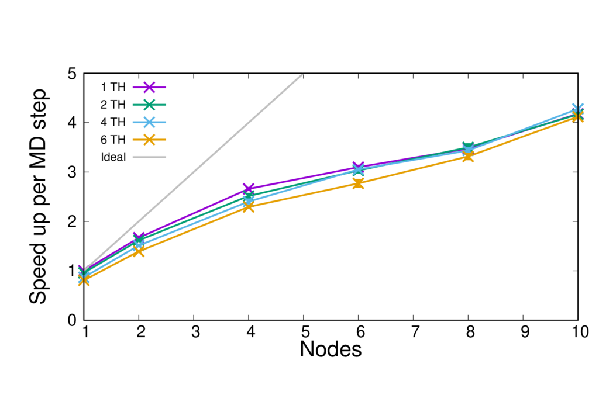

Running QM/MM simulations with CP2K¶
Running a CP2K job¶
A standard CP2K build creates multiple executables. It is advised to use the cp2k.psmp executable as this enables the hybrid MPI+OpenMP parallelisation scheme, which can have some performance benefit over using only MPI parallelisation on some machines.
CP2K should be run through a job submission script to run on the compute nodes. The following command will launch CP2K (MPI only), specifing the input and output files, and the number of mpi processes.
export OMP_NUM_THREADS=1
joblauncher (-n procs) cp2k.pmsp -i inputfile.inp -o outputfile.out
The joblauncher will depend on the job launcher on your system, common examples are mpiexec, srun and aprun.
To run with multiple threads (MPI+OpenMP) the number of threads should be set to a value greater than 1. Typical values where performance may be improved over pure a MPI job are 2, 4, 6, and 8 threads, although this will depend on many things such as your machine architecture, the type of calculation and your system size. As a general rule the number of threads per MPI process has to be chosen so that it evenly divides the number of MPI processes on a node, whilst ensuring that threads sharing memory are in the same NUMA region. The total number of MPI processes will need to be set so that the number of threads per process multiplied by the number of MPI processes gives the total number of cores requested.
Performance considerations¶
A selection of CP2K QM/MM benchmarks are available at: https://github.com/bioexcel/qmmm_benchmark_suite
The table below gives an overview of them.
Name |
Type |
QM atoms |
Total atoms |
XC Functional |
Basis set |
|---|---|---|---|---|---|
MQAE |
solute-solvent |
34 |
16,396 |
BLYP |
DZVP-MOLOPT-GTH |
ClC |
ion channel |
19, 253 |
150,925 |
BLYP |
DZVP-MOLOPT-GTH |
CBD_PHY |
phytochrome |
68 |
167,922 |
PBE |
DZVP-MOLOPT-GTH |
GFP_QM |
fluorescent protein |
20, 32, 53, 77 |
28,264 |
BLYP |
DZVP-GTH-BLYP |
Run times on ARCHER¶
The run times per MD step for each of the benchmarks is reported in the Table below. The simulations were run on the ARCHER supercomputer (https://www.archer.ac.uk), on full 24 core compute nodes containing two 2.7 GHz, 12-core E5-2697 v2 (Ivy Bridge) series processors. Threading was not enabled in any of the benchmarks (i.e all the simulations were run in pure MPI configuration).
Cores |
MQAE |
ClC (QM 19) |
CIC (QM 253) |
CBD_PHY |
GFP_QM |
|---|---|---|---|---|---|
24 |
25.755 |
57.53442 |
352.89425 |
185.36867 |
|
48 |
16.81833 |
34.4685 |
282.38286 |
109.10971 |
150.7599 |
96 |
12.18783 |
21.63885 |
238.87591 |
68.35487 |
103.39486 |
144 |
10.3228 |
18.56412 |
213.3793 |
53.63196 |
85.17014 |
192 |
9.90894 |
16.5546 |
208.10938 |
46.06454 |
77.17757 |
240 |
9.85336 |
13.76657 |
199.87593 |
43.44091 |
72.0526 |
ClC-19¶
{kind=link}
